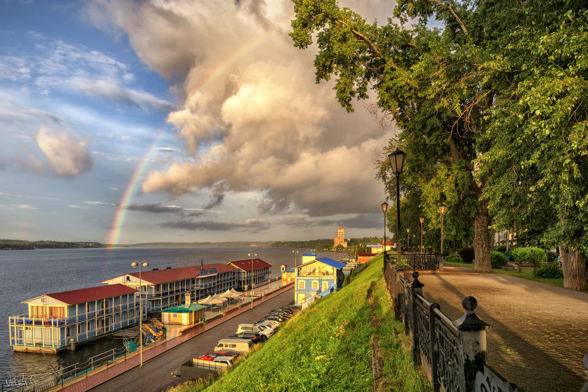

Кинешма
Кинешма была одним из богатейших купеческих волжских городов дореволюционной России. Здесь работали несколько текстильных фабрик и крупных заводов, на ярмарках велась торговля. Именно в Кинешме появился первый в России кинотеатр. На рубеже XIX – XX веков город считался одним из самых благоустроенных на Волге, его набережные украшали речные кафе, уличное освещение – по последнему слову техники, модные усадьбы и зеленые бульвары.

Начнем с прогулки по берегу великой русской реки. Волжский бульвар — визитная карточка Кинешмы. Горожане и туристы с давних пор приходили сюда отдыхать от дневных забот, прогуливаться в тени аллей (вековые деревья сохранились до сих пор) и наслаждаться прекрасными видами с высокого берега. В XIX веке по этой набережной гуляли прототипы героев пьес Островского — как, впрочем, и сам драматург.

Кафедральный собор Кинешемской епархии. Комплекс состоит из двух каменных храмов – летнего Успенского (построен в 1745 году) и зимнего Троицкого (1838) – и пятиярусной колокольни-звонницы, возвышающейся над рекой, Волжским бульваром и центром города. Лучший вид на собор открывается с воды.